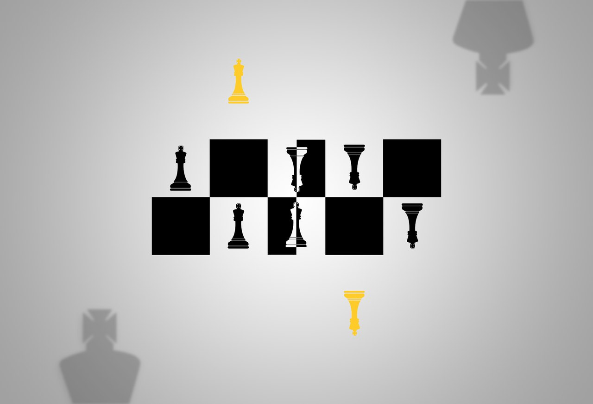

Расстановочная лаборотория Светланы Казаковой

 : +7 905 664 66 08
svetlana@kazakovas.ru
: +7 905 664 66 08
svetlana@kazakovas.ru


Формат работы

Я провожу группы по расстановкам в Нижнем Новгороде, делаю группы по Skype (или любому другому видеосервису), работаю индивидуально лично или по Skype.
Обычно заместителей несколько, и они испытывают какие-то чувства друг к другу – хочется спрятаться, подойти и обнять, могут не замечать друг друга. Они двигаются и оказываются расставлены друг по отношению к другу каким-то специфическим образом. Расстановщик вводит новые фигуры или предлагает разрешающие фразы – расстановка меняется, пока не приходит к разрешению, когда всем комфортно.
Расстановка стоит 2000 рублей, оплата лично или на карту Сбербанка. Участие заместителей обычно бесплатно.